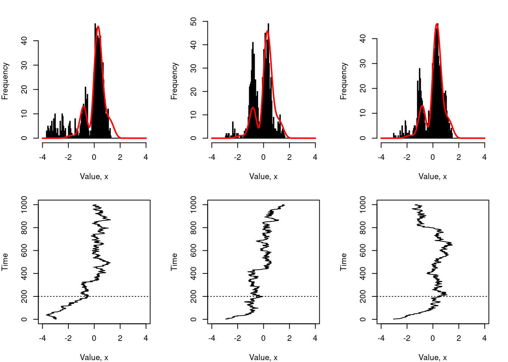

![]()

This morning I received an email from a stranger, writing to say thank you for a document I wrote almost 13 years ago. It’s a weird feeling every time I get one of those,1 but a pleasant one. This time around, the document in question was a note on the Metropolis-Hastings algorithm that I threw together in a rush for a computer science class I taught back in 2010.2 While drinking my second coffee of the morning and feeling the usual sense of dread I feel when I know that today I have to put some effort into looking for a job, yet again, I arrived at an excellent procrastination strategy…
Why don’t I start rescuing some of the content that I wrote all those years ago and currently have hidden away in pdf files in the dark corners of the internet, and put them up on my blog? Okay sure it won’t get me a job, but it feels less demeaning than yet again trying to get tech company recruiters to believe that yes actually the middle aged lady with a psychology PhD does in fact know how something about statistics and does know how to code.
Anyway. Without further self-pity, here’s a quick primer on the Metropolis-Hastings algorithm. The target audience for this is someone who has a little bit of probability theory, can write code in R (or similar), but doesn’t have any background in Markov chain Monte Carlo methods. It doesn’t dive deep into the mathematics – i.e., you won’t find any discussions of detailed balance, ergodicity, and other things a statistics class would cover – but it does try to go deep enough to give a beginner an understanding of what the algorithm is doing.
The problem
The Metropolis-Hastings algorithm is perhaps the most popular example of a Markov chain Monte Carlo (MCMC) method in statistics. The basic problem that it solves is to provide a method for sampling from some arbitrary probability distribution, which I’ll denote \(p(x)\).3 The idea is that in many cases, you know how to write out the equation for the probability \(p(x)\), but you don’t know how to generate a random number from this distribution, \(x \sim p(x)\). This is the situation where MCMC is handy. For example, suppose I’ve become interested – for reasons known but to the gods – in the probability distribution shown below:
The probability density function4 \(p(x)\) for this distribution is given by the following equation:
\[ p(x) = \frac{\exp(-x^2) \left(2 + \sin(5x) + \sin(2x)\right)}{\int_{-\infty}^\infty \exp(-u^2) \left(2 + \sin(5u) + \sin(2u)\right) \ du} \]
My problem is that I either don’t know how to solve the integral in the denominator, or I’m simply too lazy to try.5 So this means in truth, I only know the distribution “up to some unknown constant”. That is, all I really know how to calculate is the numerator. Given this, a more realistic way to express my knowledge about the target distribution is captured by this equation:
\[ p(x) \propto \exp(-x^2) \left(2 + \sin(5x) + \sin(2x)\right) \] How can I generate samples from this distribution?
The Metropolis-Hastings algorithm
The basic idea behind MCMC is very simple. The idea is to define a Markov chain6 over possible \(x\) values, in such a way that the stationary distribution of the Markov chain is in fact \(p(x)\). That is, what we’re going to do is use a Markov chain to generate a sequence of \(x\) values, denoted \((x_0, x_1, x_2, \ldots, x_n)\), in such a way that as \(n \rightarrow \infty\), we can guarantee that \(x_n \sim p(x)\). There are many different ways of setting up a Markov chain that has this property. The Metropolis-Hastings algorithm is one of these.
The proposal step
Here’s how it works. Suppose that the current state of the Markov chain is \(x_n\), and we want to generate \(x_{n+1}\). In the Metropolis-Hastings algorithm, the generation of \(x_{n+1}\) is a two-stage process.
The first stage is to generate a candidate, which we’ll denote \(x^∗\). The value of \(x^∗\) is generated from the proposal distribution that we already know how to sample from. We denote this proposal distribution \(q(x^∗ | x_n)\). Notice that the distribution we sample from depends on the current state of the Markov chain, \(x_n\). There are some technical constraints on what you can use as a proposal distribution, but for the most part it can be anything you like.7 A very typical way to do this is to use a normal distribution centered on the current state \(x_n\). More formally, we write this as:
\[ x^* | x_n \sim \mbox{Normal}(x_n, \sigma^2) \] for some standard deviation \(\sigma\) that we select in advance (more on this later!)
The accept-reject step
The second stage is the accept-reject step. Firstly, what you need to do is calculate the acceptance probability, denoted \(A(x_n \rightarrow x_∗)\), which is given by:
\[ A(x_n \rightarrow x_∗) = \min \left(1, \frac{p(x^*)}{p(x^n)} \times \frac{q(x_n | x^*)}{q(x^* | x_n)} \right) \] There are two things to pay attention to here. Firstly, notice that the ratio \(p(x^*) / p(x^n)\) doesn’t depend on the normalising constant for the distribution. Or, to put it in a more helpful way, that integral in the first equation is completely irrelevant and we can ignore it. As a consequence, for our toy problem we can write this:
\[ \frac{p(x^*)}{p(x^n)} = \frac{\exp(-{x^*}^2) \left(2 + \sin(5x^*) + \sin(2x^*)\right)}{\exp(-{x_n}^2) \left(2 + \sin(5x_n) + \sin(2x_n)\right)} \] That’s a nice simple thing to compute with no need for any numerical integration or, gods forbid, solving the integral analytically.
The second thing to pay attention to is the behaviour of the other term, \(q(x_n | x^*) / q(x^* | x_n)\). What this term does is correct for any biases that the proposal distribution might induce. In this expression, the denominator \(q(x^∗ | x_n)\) describes the probability with which you’d choose \(x^*\) as the candidate if the current state of the Markov chain is \(x_n\). The numerator, however, describes the probability of a transition that goes the other way: that is, if the current state had actually been \(x^∗\), what is the probability that you would have generated \(x^n\) as the candidate value? If the proposal distribution is symmetric, then these two probabilities will turn out to be equal. For example, if the proposal distribution is normal, then:
\[ \begin{array}{rcl} q(x^* | x_n) & = & \frac{1}{\sqrt{2 \pi} \sigma} \exp \left( -\frac{1}{2 \sigma^2} \left(x_n - x^*\right)^2 \right) \\ q(x_n | x^*) & = & \frac{1}{\sqrt{2 \pi} \sigma} \exp \left( -\frac{1}{2 \sigma^2} \left(x^* - x_n \right)^2 \right) \end{array} \]
Clearly, \(q(x^* | x_n) = q(x_n | x^*)\) for all choices of \(x_n\) and \(x^*\), and as a consequence the ratio \(q(x_n | x^*) / q(x^* | x_n)\) is always 1 in this case.
This special case of the Metropolis-Hastings algorithm, in which the proposal distribution is symmetric, is referred to as the Metropolis algorithm.
Okay. Having proposed the candidate \(x^∗\) and calculated the acceptance probability, \(A(x_n \rightarrow x^∗)\), we now either decide to “accept” the candidate and set \(x_{n+1} = x^∗\) or we “reject” the candidate and set \(x_{n+1} = x_n\). To make this decision, we generate a uniformly distributed random number between 0 and 1, denoted \(u\). Then:
\[ x_{n+1} = \left\{ \begin{array}{rl} x^* & \mbox{ if } u \leq A(x_n \rightarrow x^∗) \\ x_n & \mbox{ otherwise} \end{array} \right. \] In essence, this is the entirety of the Metropolis-Hastings algorithm! True, there are quite a few technical issues that attach to this, and if you’re interested in using the algorithm for practical purposes I strongly encourage you to do some further reading to make sure you understand the traps in detail, but for now I’ll just give you some examples of things that work and things that don’t, to give you a bit of a feel for how it works in practice.
Implementing the sampler
Okay. That’s enough mathematics. Let’s have a look at some R code implementing the Metropolis-Hastings algorithm for the toy problem: can we write an R function that draws samples from the weird looking probability distribution I plotted at the start of this post?
To do this, I’ll define the sampler in terms of three functions. First, we have a target() function that calculates the probability of a given sample x, or – more precisely – calculates the numerator term in the equation describing the probability density:
target <- function(x) {
exp(-x^2) * (2 + sin(5 * x) + sin(2 * x))
}Estoy emocionada. üòê
Next we define a metropolis_step() function that takes some value x corresponding to the current state of the Markov chain, and a parameter sigma that describes the standard deviation of the proposal distribution:
metropolis_step <- function(x, sigma) {
proposed_x <- rnorm(1, mean = x, sd = sigma)
accept_prob <- min(1, target(proposed_x) / target(x))
u <- runif(1)
if(u <= accept_prob) {
value <- proposed_x
accepted <- TRUE
} else {
value <- x
accepted <- FALSE
}
out <- data.frame(value = value, accepted = accepted)
out
}Finally we can write a metropolis_sampler() function that runs the Metropolis algorithm for some number of steps:
metropolis_sampler <- function(initial_value,
n = 1000,
sigma = 1,
burnin = 0,
lag = 1) {
results <- list()
current_state <- initial_value
for(i in 1:burnin) {
out <- metropolis_step(current_state, sigma)
current_state <- out$value
}
for(i in 1:n) {
for(j in 1:lag) {
out <- metropolis_step(current_state, sigma)
current_state <- out$value
}
results[[i]] <- out
}
results <- do.call(rbind, results)
results
}We have several arguments here. Three of them follow intuitively from the mathematical description I gave in the last section:
initial_valueis the start point for the Markov chainnis the number of samples we want to draw from the target distributionsigmais the standard deviation of the normal distribution we use to propose candidate values at each step
The other two are:
burninis the number of iterations we run the sampler for before recording results8lagis the number of iterations we run the sampler for between successive samples
I’ll talk more about these input arguments later, but for now let’s take a look at what happens when we call our metropolis_sampler() function:
set.seed(1234)
out <- metropolis_sampler(initial_value = 0)
out[1:10, ] value accepted
1 0.3143686 FALSE
2 0.3500985 TRUE
3 0.3500985 FALSE
4 0.3500985 FALSE
5 0.3500985 FALSE
6 -0.1665712 TRUE
7 -0.9428251 TRUE
8 0.4271852 TRUE
9 0.3168997 TRUE
10 0.3352164 TRUEAs you can see it returns a data frame with n rows and two columns. The first column records the numeric value that was sampled, and accepted is a logical variable indicating whether this value arose from accepting the proposal (rather than rejecting it).
The effect of proposal width
In practice when you’re implementing a Metropolis algorithm, the choice of proposal distribution matters a lot. If it’s too narrow, your sampler will have an extremely high acceptance rate on average, but it will move around extremely slowly. To use the technical term, it has a very low mixing rate. This distorts your estimate of the target distribution. However, if it’s too wide, the acceptance rate becomes too low and the chain gets stuck on specific values for long periods of time. This also distorts your estimate of the target distribution. Yes, technically, if you run your accursed sampler long enough despite it’s poor choice of proposal distribution it will eventually produce the right answer… but wouldn’t you prefer a sampler that gives you the right answer quickly rather than slowly?
This idea is illustrated in the plots below, in which I’ve run a Metropolis sampler with n = 10000 on our toy problem three times. On the left, I’ve made a good choice of proposal distribution, setting sigma = 1. In the middle, my proposal distribution is too narrow (I set sigma = .025 and it doesn’t work). On the right, my proposal distribution is too wide: it turns out that sigma = 50 isn’t a good idea for this problem either:
Source code for plots
set.seed(1234)
par(mar = c(4, 4, 2, 2))
layout(matrix(1:6, nrow = 2, ncol = 3))
sigma <- c(1, 0.025, 50)
n <- 10000
for(i in 1:3) {
out <- metropolis_sampler(
initial_value = -1,
n = n,
sigma = sigma[i]
)
hist(
out$value,
breaks = seq(-3, 3, .05),
main = paste("Sample values: sigma =", sigma[i]),
xlab = "Value, x",
ylab = "Frequency"
)
x <- seq(-3, 3, .05)
p <- target(seq(-3, 3, .05))
expected <- n * p / sum(p)
lines(
x = x,
y = expected,
type = "l",
col = "red",
lwd = 2
)
plot(
x = out$value,
y = 1:n,
type = "l",
xlim = c(-3, 3),
xlab = "Value, x",
ylab = "Time"
)
}The way to read these plots is as follows: for all three values of sigma, we have two plots. The top one shows a histogram of the samples values obtained using the Metropolis sampler (that’s the black bars). Superimposed on this is a red line showing the distribution of values you’d expect to obtain when sampling from the true distribution. The lower panel plots the Markov chain itself: the sequence of generated values.9
In the leftmost plots, we see what happens when we choose a good proposal distribution: the chain shown in the lower panel moves rapidly across the whole distribution, without getting stuck in any one place. In the far right panel, we see what happens when the proposal distribution is too wide: the chain gets stuck in one spot for long periods of time. It does manage to make big jumps, covering the whole range, but because the acceptance rate is so low that the distribution of samples is highly irregular. Finally, in the middle panel, if we set the proposal distribution to be too narrow, the acceptance rate is very high so the chain doesn’t get stuck in any one spot, but it doesn’t cover a very wide range. This simple example should give you an intuition for why you need to “play around” with the choice of proposal distribution. A good proposal distribution can make a huge difference!10
The role of the burn-in period
Up to this point I haven’t really explained what the burnin and lag parameters are there for. To be honest I don’t plan to go into details, but here’s the basic idea. First, let’s think about the burn-in issue. Suppose you started the sampler at a very bad location… say initial_value = -3, and – just so that we can exaggerate the problem – we’ll use a proposal distribution that is too narrow, say sigma = .1. The image below shows three runs of this sampler:
Source code for plots
set.seed(1234)
par(mar = c(4, 4, 2, 2))
layout(matrix(1:6, nrow = 2, ncol = 3))
n <- 1000
for(i in 1:3) {
out <- metropolis_sampler(
initial_value = -3,
n = n,
sigma = .1
)
hist(
out$value,
breaks = seq(-4, 4, .05),
main = NULL,
xlab = "Value, x",
ylab = "Frequency"
)
x <- seq(-4, 4, .05)
p <- target(seq(-4, 4, .05))
expected <- n * p / sum(p)
lines(
x = x,
y = expected,
type = "l",
col = "red",
lwd = 2
)
plot(
x = out$value,
y = 1:n,
type = "l",
xlim = c(-4, 4),
xlab = "Value, x",
ylab = "Time"
)
abline(h = 200, lty = "dotted")
}
As you can see, the sampler spends the first 200 or so iterations slowly moving rightwards towards the main body of the distribution. Once it gets there, the samples start to look okay, but notice that the histograms are biased towards the left (i.e., towards the bad start location). A simple way to fix this problem is to let the algorithm run for a while before starting to collect actual samples. The length of time that you spend doing this is called the burn in period.
To illustrate how it helps, the figure below shows what would have happened if I’d used a burn in period of 200 iterations for the same sampler:
Source code for plots
set.seed(1234)
par(mar = c(4, 4, 2, 2))
layout(matrix(1:6, nrow = 2, ncol = 3))
n <- 1000
for(i in 1:3) {
out <- metropolis_sampler(
initial_value = -3,
burnin = 200,
n = n,
sigma = .1
)
hist(
out$value,
breaks = seq(-4, 4, .05),
main = NULL,
xlab = "Value, x",
ylab = "Frequency"
)
x <- seq(-4, 4, .05)
p <- target(seq(-4, 4, .05))
expected <- n * p / sum(p)
lines(
x = x,
y = expected,
type = "l",
col = "red",
lwd = 2
)
plot(
x = out$value,
y = 1:n,
type = "l",
xlim = c(-4, 4),
xlab = "Value, x",
ylab = "Time"
)
}It’s still not ideal – largely because we don’t have many samples, we haven’t set a lag, and the value of sigma isn’t very well chosen – but you can see that the bias caused by the poor choice of starting value has disappeared.
The role of the lag parameter
Finally, I’ll mention in passing the role played by the lag parameter.11 In some situations you can be forced into using a proposal distribution that has a very low acceptance rate. When that happens, you’re left with an awkward Markov chain that gets stuck in one location for long periods of time. One thing that people often do in that situation is allow several iterations of the sampler to elapse in between successive samples. This is the lag between samples. The effect of this is illustrated in below, which shows the behaviour of a sampler with a very wide proposal distribution (sigma = 50) with n = 1000 samples drawn, at lag = 0 (left), lag = 10 (middle) and lag = 100 (right).
Source code for plots
set.seed(1234)
par(mar = c(4, 4, 2, 2))
layout(matrix(1:6, nrow = 2, ncol = 3))
n <- 1000
lag <- c(0, 10, 100)
for(i in 1:3) {
out <- metropolis_sampler(
initial_value = 0,
lag = lag[i],
n = n,
sigma = 50
)
hist(
out$value,
breaks = seq(-4, 4, .05),
main = paste("Lag:", lag[i]),
xlab = "Value, x",
ylab = "Frequency"
)
x <- seq(-4, 4, .05)
p <- target(seq(-4, 4, .05))
expected <- n * p / sum(p)
lines(
x = x,
y = expected,
type = "l",
col = "red",
lwd = 2
)
plot(
x = out$value,
y = 1:n,
type = "l",
xlim = c(-4, 4),
xlab = "Value, x",
ylab = "Time"
)
}Formally speaking, the thing we’re trying to do here by increasing lag is reduce the autocorrelation between successive samples in our chain. In an ideal world we want our sampled values to be independent samples from the target distribution \(p(x)\). The more our samples are correlated with each other, the more potential there is for the histogram of sampled values to depart systematically from the target distribution. Introducing a lag between successive samples is a simple way to achieve this.
A word of warning
The discussion in this post is heavily oversimplified. It doesn’t talk at all about the conditions required to make Metropolis sampling work, it doesn’t talk about diagnostics, and it certainly doesn’t talk about what happens when we move this into higher dimensional problems. I haven’t made any attempt to implement this efficiently, either: there’s little point in me doing that when there are already many very efficient tools already in existence. My goal when I wrote this was so that my class could have an example that was simple enough that they could implement it themselves and get a sense of what MCMC algorithms do. At one point I had this idea that I’d gradually expand on these materials so that students could work their way up from introductory materials like this to more realistic examples, but I never really found the time to do that. Maybe one day!
Footnotes
Bizarrely, this actually happens to me a lot. It’s totally surreal.↩︎
Another surreal experience that I’ve had quite a bit lately is getting rejected from data science jobs because I don’t have a computer science degree and my qualifications are technically in psychology. Apparently I’m considered skilled enough to teach computational statistics to university computer science students, but still considered less skilled at those tools than the students that I taught? I mean, it’s either that or tech company recruiters don’t actually read the résumés that they get sent… but that couldn’t possibly be true, right? Efficient market hypothesis and all that…↩︎
Okay. So, I just know that a serious statistician will read this at some point, and – from bitter experience – I’ve learned that when a lady person writes about mathematics and is unclear on even the smallest thing her credibility is immediately subject to question. So, in an attempt to forestall any misapprehensions, I most certainly understand the difference between a density function and a distribution function, and equally I know that it is conventional to use lower case to refer to densities and upper case to refer to distributions and probability mass functions. However, I wrote this note for undergraduate computer science students, and accordingly I chose to keep my notation simple, even if it is a little imprecise.↩︎
Some asides: my experience teaching this class is that it’s quite common for people new to statistics to struggle with the concept of probability density. It’s not super important for the purposes of this post, and to a first approximation it’s totally okay to think of \(p(x)\) as “the probability of observing \(x\) (sort of)”. It is of course the case that the difference between a pdf, a pmf, and a cdf matters when you start doing mathematical statistics, but I would never be so cruel as to inflict that stuff on my undergraduate computer science students! Not once did refer to sigma algebras in my undergrad teaching, honest. Though, looking back, I did once inflict Kolmogorov complexity on a class. It was… not a good decision.↩︎
It’s worth mentioning that, at this point in the class my students had all been shown several examples of the curse of dimensionality problem. So even though yes, of course it’s easy to solve this problem in one-dimension, they were all acutely aware that using brute force numerical integration methods to compute the denominator isn’t going to work we started trying to do something more realistic than my toy example.↩︎
At this point in the class students had most certainly encountered Markov chains!↩︎
That said, it’s worth mentioning one important property of the proposal distribution: the sampler won’t work if there are some values of \(x\) that never get proposed!↩︎
The “burn in” period also goes by the name “warm up” period.↩︎
This is usually referred to as a “trace plot”. Eyeballing the trace plot is a useful thing to do when examining the behaviour of your MCMC algorithm, but beware… it is a very crude method. The devil is very much in the details here.↩︎
At this point she asks herself… does she want to talk about methods for automatically choosing a good proposal? No. No she does not.↩︎
This is often referred to as the “thinning” rate. ↩︎
Reuse
Citation
BibTeX citation:
@online{navarro2023,
author = {Navarro, Danielle},
title = {The {Metropolis-Hastings} Algorithm},
date = {2023-04-12},
url = {https://blog.djnavarro.net/posts/2023-04-12_metropolis-hastings},
langid = {en}
}
For attribution, please cite this work as: